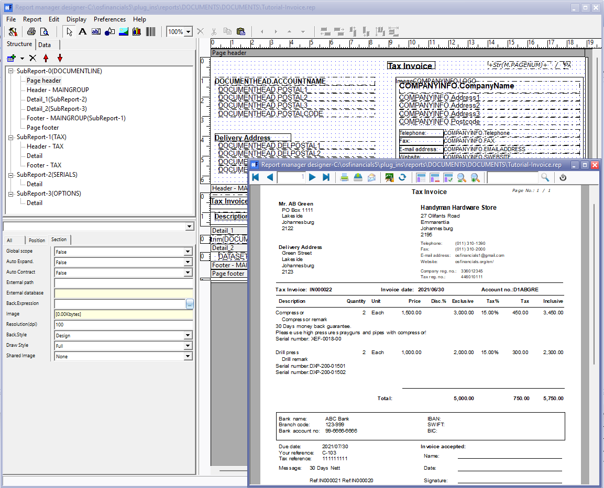

Working with Reportman
The Report designer in osFinancials provides a powerful tool for creating and customising reports according to your specific needs. It is integrated and customised within osFinancials5, utilising the Reportman reporting engine. The Report designer offers a wide range of components, functions, and features to design and modify reports and document layout files.
All reports and document layout files included in your osFinancials5 installation are created using the Report manager designer. These reports and layout files are built on the Firebird database type and should also support other database types such as MSSQL.
Report designer report types
The reports and document layout files are organized in a file structure in various folders within the "... \plug_ins\reports" directory of your osFinancials5 installation. Here are the commonly used report categories:
- Document layout files: The document layout files in osFinancials5 are stored in the "...\plug_ins\reports\DOCUMENTS\DOCUMENTS" folder. Among the shipped document layout files are the "Layout file, Document layout, Document layout (15-code)" and "Delivery note" layout files. These layout files can be translated using language files.
The "Layout file, Document layout, Document layout (15-code)" files are designed to support various types of sales documents and purchase documents, such as invoices, credit notes, quotes, delivery notes, purchases, supplier returns, and orders. When you open your Set of Books, the layout files will be printed in the language associated with that Set of Books. If you choose to change the language in osFinancials, the layout files will be printed in the selected language.
Furthermore, you have the flexibility to select from different layout files for printing or reprinting your sales documents and purchase documents. You can even create copies of existing layout files and customize their appearance and format to align with your business branding or meet specific requirements. This allows you to tailor the document layout files according to your preferences and ensure they reflect your desired visual style.
- Reports menu: The Reports menu in osFinancials5 provides access to a comprehensive range of standard reports that are essential for managing various aspects of your business. These reports cover areas such as the ledger, debtors, creditors, stock items, documents, sales, sales analysis, purchases, purchase analysis, and more.
All of these standard reports are stored in the "...\plug_ins\reports\systemreports" folder. The reports are organized into folders and subfolders within this directory to facilitate easy navigation and retrieval.
To access these reports, you can simply go to the Reports menu on the Reports ribbon. From there, you can explore the different menu options and sub-menu options to locate the specific report you need. The Reports menu provides a convenient and centralised hub for accessing the wide range of reports available in osFinancials5, making it easier for you to generate the necessary financial and operational insights for your business.
- User reports menu: The User reports menu in osFinancials5 provides a dedicated space for storing and accessing custom reports that you create or customize according to your specific needs. These reports are stored in the "...\plug_ins\reports\userreports" folder, which is separate from the standard reports folder.
To add your own custom reports, you should place them in the "userreports" folder. This folder serves as a repository for your personalised reports, allowing you to organize and manage them effectively.
Once your custom reports are added to the "userreports" folder, you can access them from the User reports menu on the Reports ribbon. This menu provides a convenient structure for accessing and printing your custom reports.
The User reports menu includes a range of pre-defined reports such as Debtors and Creditors Age analysis reports, as well as Graphs per week or month for Ledger, Debtors, Creditors, Sales, and Purchases. Additionally, there are basic sample reports like Debtor listing and Creditor listing, which serve as tutorials to guide you in creating new reports using the Report designer in the osFinancials environment. These sample reports demonstrate various features, including parameters, lookups, and more.
The User reports menu empowers you to tailor your reporting capabilities to suit your unique business requirements, allowing you to create, access, and print custom reports seamlessly within the osFinancials5 system.
- Ledger analyser: On the Reports ribbon in osFinancials5, you will find the Ledger analyser options, namely Ledger analyser 1, Ledger analyser 2, and T-Account viewer. These options provide a range of report types for generating and printing various financial statements and analyses.
The available reports include the Trial balance, Income statement, Balance sheet, Standard column balances, This year vs last year, Budget vs actual, Budget listing and the transactions in the T-Account viewer. These reports offer valuable insights into your financial data and help you analyse the performance and financial position of your business.
The reports within the Ledger analyser options are stored in the "...\plug_ins\reports\GENERAL\ledgerview" folder. It's important to note that these reports are preset and should not be customised. They are designed to provide standard financial analyses and should be used as intended.
Additionally, the reports generated through the Ledger analyser options can be exported and opened in spreadsheet applications, allowing for further analysis and customisation of the data.
By utilizing the Ledger analyser options, you can easily generate and access a variety of essential financial reports and analyses within osFinancials5, providing valuable insights into your company's financial performance.
- Spreadsheet reports menu: The Spreadsheet reports menu on the Reports ribbon in osFinancials5 provides access to reports that open in the integrated spreadsheet component. These reports are stored and organized in the "...\plug_ins\reports\excelreports" folder. Each report consists of a base.xlsx file, SQL files, and possibly parameter files. It's important to note that these spreadsheet reports cannot be edited using the Report designer tool. The available shipped spreadsheet reports include Creditors listing, Debtors listing, Transactions per period, General ledger - Budget, General ledger (Transaction totals), Sales analysis, and Stock movement.
The Report designer utilises different tables in osFinancials to generate reports. The document outlines the commonly used tables and their relationships to help you build reports effectively.
Connections
The connections, interactions, and relationships between datasets and database connections have been enhanced in osFinancials5 to integrate seamlessly with Reportman. The Zeos Database Objects connection is used, which ensures smooth communication with the database and confirms successful connection.
Overall, the Report designer in osFinancials provides a flexible and comprehensive solution for creating, customizing, and managing reports to meet your specific reporting requirements.
|
|
In addition to the Reportman topics covered in this documentation, there is a set of offline documentation available in the "...\plug_ins\reportman\doc" folder of your osFinancials5 installation directory. You can access this offline documentation by opening the index.html file located at ".../plug_ins/reportman/doc/index.html" in your web browser. Furthermore, the official online documentation for the Report Manager can be found at https://reportman.sourceforge.io/. This online documentation provides additional resources and information regarding the Report Manager. |


If you encounter connection issues and are unable to establish a successful connection in osFinancials5, it could indicate that certain aspects require attention. Here are some potential factors to consider:
- Installation of osFinancials5: It's possible that the Firebird database engine was not installed during the osFinancials5 installation process. Make sure you have installed the necessary components, including the database engine, and ensure they are properly configured.
|
|
After installing osFinancials5, you will find optional additional components included in the "installs" folder within the root installation directory. These components include:
|


- Reportman (.rep) files: If there are multiple aliases or poorly designed reports or document layout files in the reportman (.rep) files, it may lead to connection problems. Review and adjust the aliases and ensure the reports and document layout files are correctly structured.
- Corrupted data: Corruption within the database can also cause connection issues. Check for any signs of data corruption and take appropriate measures to address it, such as restoring from a backup.
- Data compatibility: The data within the database, including date formats, currencies, and time, is influenced by the system's locale or regional and language settings. Ensure that the database settings align with the desired system locale to avoid conflicts and compatibility issues.
By addressing these potential issues, you can troubleshoot and resolve connection problems in osFinancials5 effectively.
|
|
If osFinancials5 have been installed on a Windows machine, the Language and Regional settings may be changed if you click on the Set the Windows date/format/style button located in Setup → Company info - Options or on the DateTime settings button located on the Setup → System parameters (Setup ribbon). In Windows operating you may change this in the Control Panel (Regional and Language settings). This will for example display the correct date format as per your countries' regional settings on all reports output and screens in osFinancials5. |

|
|
To develop or edit reports in osFinancials5, you need to use the built in Reportman in osFinancials5. Some extra functions have been added to Reportman in osFinancials5. Some of these extra functions are; 'GETTEXTLANG' , 'RETURNSQL' , 'NUMBERTOWORDS' , 'GETPRICE', etc. Another important feature is Data access configuration. |
In osFinancials5, all reports, including document layout files designed in Reportman, are fully translatable using the 'GETTEXTLANG' function. This means that they can be displayed in any language by changing the language setting in the Switch language option (Start ribbon).
To customize the language files, you can access the Tools menu and select Customise language in the Setup ribbon. The language files are stored in the ".../bin/languages" folder.
When designing reports in Reportman, all objects are added to a selected page structure. For example, in the "Tutorial-Invoice.rep" report, the Page header contains expressions from the 'COMPANYINFO' and 'DOCUMENTHEAD' datasets, an image (company logo) from the COMPANYINFO dataset, and static text labels such as Telephone, Fax, and E-mail address.
To edit the objects in the report, you can click on a selected object in the list, and it will be displayed on the grid. From there, you can easily edit, move, resize, or set properties for the object.
|
|
If you encounter an error while printing or previewing the report, make note of the name and number of the object (expression, etc.). This information will be helpful in locating the specific object in the Report designer and resolving the error. |

By utilizing the Report designer and following these steps, you can effectively customize and troubleshoot reports in osFinancials5.